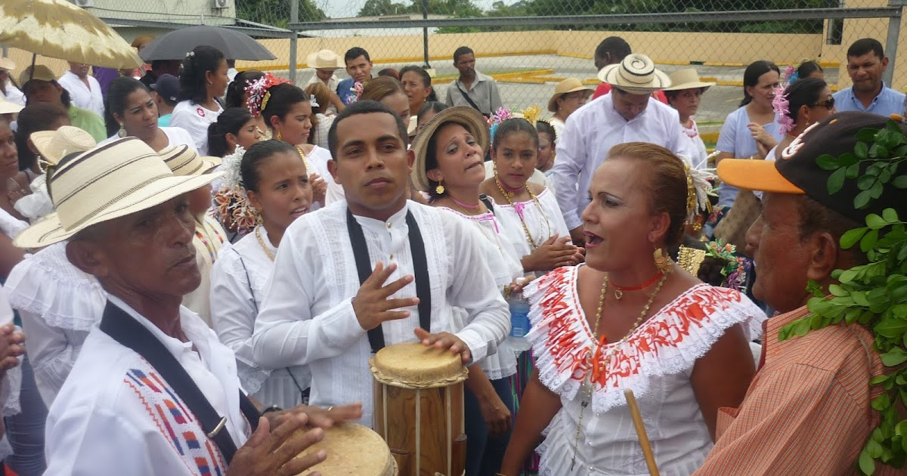
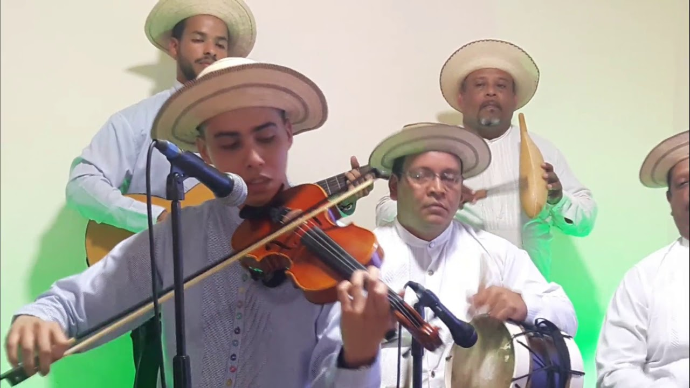
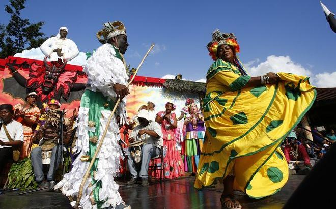
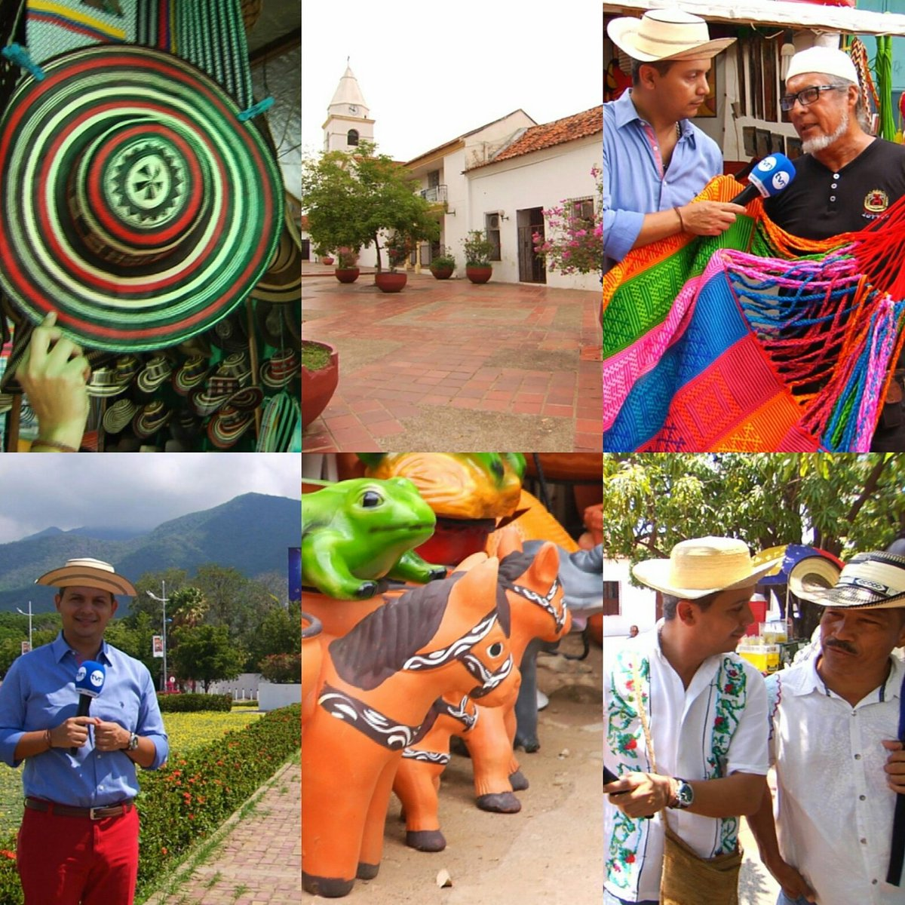

El turismo en Panamá representa una de las principales actividades de Panamá. Las principales áreas de turismo en el país se centran en el turismo de negocios, las playas y el comercio. La mayoría de los turistas provienen de los Estados Unidos, América Central, Canadá, Europa, y América del Sur. El turismo genera ganancias de aproximadamente US $ 1.400 millones anuales. Esta cifra ha aumentado rápidamente desde que llegó el millonésimo turista en 2004. Hubo 2 millones de turistas en 2011.
Alrededor de 1.5 millones de turistas ingresaron a Panamá en 2013 a través del aeropuerto de Tocumen ubicado en la Ciudad de Panamá. En Panamá, un turista, en promedio, gasta US $ 365–385 por día, el gasto turístico per cápita más alto en Centroamérica mientras que el turista promedio en Panamá permanece entre 6 y 7 días.
En 2011, Panamá fue visitada por más de 2 millones de turistas, un aumento del 18% en comparación con 2010. Actualmente es una de la naciones que lideran el área turística en Centroamérica junto con Costa Rica y Guatemala.
El Waldorf Astoria Panamá, el primer hotel Waldorf Astoria en América Latina, abrió sus puertas en marzo de 2013. El Trump Ocean Club, inaugurado en 2010 y ahora es JW Marriott Panamá es uno de los hoteles más utilizados por turistas. El BioMuseo, un centro de historia natural, se inauguró en octubre de 2014.8 La parte antigua de la ciudad, Panamá Viejo, ha sido Patrimonio de la Humanidad por la UNESCO desde 1997. El archipiélago de Bocas del Toro, es popular entre los mochileros.
FESTIVIDADES PANAMEÑAS
Fiestas Patrias es el nombre con el que se conocen algunas festividades patrióticas
realizadas en Hispanoamérica con el fin de conmemorar la fundación de los actuales estados nacionales como independientes de España.
El mes de noviembre es el mes de honrar a la patria panameña, por su historia, cultura, gastronomía y lo más importante su gente, ya que Panamá somos todos.
Celebramos fechas muy importantes de nuestra nación, fechas que están escritas en nuestro camino como país, camino que entre luchas, logros, aciertos y desaciertos
forman parte de nuestra historia y estarán presentes hoy, mañana y siempre en este territorio tan pequeño como lo dejó escrito en sus letras Ricardo Miró, en la poesía Patria de 1909.
Estas festividades son las siguientes:
El 3 de noviembre se celebra la Separación de Panamá de Colombia (1903).
El 4 de noviembre es el día de los Símbolos Patrios.
El 5 de noviembre se considera como la consolidación de nuestra Separación de Colombia.
El 10 de noviembre conmemoramos el Grito de Independencia de La Villa de los Santos (1821).
El 28 de noviembre la Independencia de Panamá de España (1821).
El Primer Grito de Independencia de la Villa de Los Santos se conoce al hecho histórico ocurrido el 10 de noviembre de 1821 en Panamá,
en la que ocurre un lanzamiento popular en contra del gobierno colonial español en La Villa de Los Santos en la Provincia de Los Santos.
GASTRONOMIA PANAMEÑA
La gastronomía de Panamá es el resultado de la influencia histórica en el país por las culturas amerindia, hispana, africana, y afroantillana y estadounidense. Se caracteriza por el alto consumo de arroz en diferentes formas y preparaciones, así como las sopas, siendo el sancocho la más popular. Otros insumos e ingredientes son el maíz, plátanos, gallina, carnes, pescados y mariscos, con los que se preparan diversos platos y friturasSegún algunos estudios, en especial los del historiador Alfredo Castillero (Globalización alimentaria), los principales soportes alimenticios de la población indígena panameña antes de la llegada de los españoles eran el maíz, la yuca, el camote, el zapallo, el otoe y el ñame americano, además de una gran variedad de árboles frutales comestibles(aguacate, papaya, mamones, tomate, piña, etc.) Su caza era abundante, sobre todo volatería y venados; además consumían muchos peces, iguanas, ardillas, monos, ñeques, armadillos, conejos pintados, tapires, zaínos, manatíes, etc.
Pero todo esto cambió rápida y profundamente cuando se inició la colonización europea en Panamá (1502).
Unas de las comidas panameñas que tenemos son:
Guacho.
Arroz con Guandú.
Sancocho.
Rondón.
Saus.
Mondongo.
Tamales.
Patacones.
Las fiestas patrias son la manifestación de un pueblo que expresa sus sentimientos, su alegría, su identidad a través de diferentes manifestaciones.
MÚSICA TÍPICA PANAMEÑA
Panamá es una tierra sumamente musical, un país centroamericano que se destaca por sus ritmos tropicales, afro caribeños, urbanos, campesinos y folklóricos.
Algunas músicas típicas panameñas son:
El tamborito es un ritmo en base a tambores y la voz del cantante acompañada por un coro. Es muy común en las fiestas patronales y carnavales.

El punto es un género que incluye en su estructura la forma melódica y la coreografíca. Es considerado el baile y género musical más bello y elegante de Panamá.

La cumbia es muy popular en todo Panamá pero tiene su epicentro en Veragua. En la cumbia los instrumentos presentes son los tambores, las maracas, la churuca o guacharaca, el rabel o violín criollo, la flauta y el acordeón diatónico.
El congo es un género musical y baile afrocolonial que se caracteriza por su expresión violenta y erótica.

Cultura Panameña

La cultura de Panamá es el resultado de la fusión de diversas culturas que se han asentado en el país durante su historia:
españoles, afro-antillanos, árabes, judíos, estadounidenses, chinos, etc. Esta combinación se observa en su música, en la
gastronomía, en el arte y etc.
algunos elementos culturales que podemos mencionar son:
Los vestidos
Los bailes
Los instrumentos
Las leyendas
La música típica
Los siete pueblos indígenas de Panamá son los Ngäbe, los Guna,
los Embera, y los Bri Bri. De acuerdo con el censo de 2010,
ascienden a 417.559 habitantes, el 12% del total de la población de Panamá.
Hay 5 regiones o comarcas, reconocidas por diferentes leyes que están basadas en
los derechos constitucionales de los pueblos indígenas: Guna Yala (1938), Emberá-Wounaan (1983),
Guna Madugandi (1966), Ngäbe-Buglé (1997) y Guna Wargandí (2000). En total, estas comarcas abarcan
un área de 1.7 millones de hectáreas.
Los bailes congos son una mezcla de movimientos,
percusión y sonidos fuertes, colores, vestidos y máscaras, son una muestra ferviente
de las antiguas raíces africanas que han sobrevivido a muchas generaciones, resguardada
celosamente hasta nuestros días.El baile congo es un conjunto
de movimientos propios de cada uno, los cuales no tienen un orden específico,
más bien son intrínsecos en cada persona que desarrolla el baile;
algunos lo hacen con sensualidad, otros con sentimiento, con expresiones
muy particulares, con mensajes de vida, rememorando situaciones.
Manualidades y Artesanias
La artesanía se puede clasificar en: artesanía indígena, artesanía tradicional popular, artesanía contemporánea o neoartesanía. Producción de bienes útiles, rituales y estéticos.
Algunos artesanos pueden localizarse por especialidades; por ejemplo: tambores, polleras, máscaras de diablos, prendas de polleras y ornamentos adicionales. De acuerdo con el lugar donde se produce la materia prima, tenemos sombreros, chácaras de pita, alfarería, cestería, cerámica.